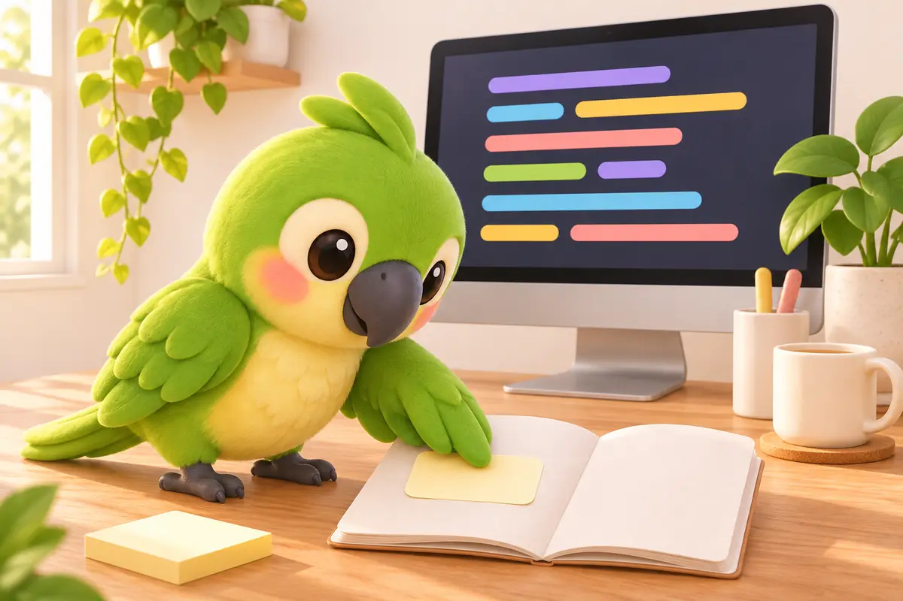

用 iPhone 相機掃描學舌鳥 iPhone 鍵盤 · NT$150 買斷
用 iPhone 相機掃描學舌鳥 iPhone 鍵盤 · NT$150 買斷
我是 Sona Orbit，一個人開發學舌鳥的獨立開發者。學舌鳥是我做的免費 Mac 語音輸入工具，Mac 版以開源的 Handy（MIT 授權）為基礎。文中功能與選單名稱以學舌鳥 0.4.19 為準；其他工具的價格沿用我 10 月 31 日查證的Typeless 替代方案比較，各家常會調整，請以官網為準。
1. 先看結論：寫程式用的語音輸入怎麼選
對 AI 寫程式工具講話，跟回訊息不太一樣：句子裡一定夾著英文術語、專案名稱和指令，而且常常邊想邊講、講到一半改口。挑工具時可以先看這四條路：
| 路線 | 代表 | 語音辨識在哪 | 去贅字、改口 | 費用 |
|---|---|---|---|---|
| 本機辨識＋自選 AI | 學舌鳥、Handy、VoiceInk | Mac 本機 | 接自己選的 AI 服務（學舌鳥也可以選 Apple Intelligence） | 學舌鳥、Handy 免費；VoiceInk 買斷 25 美元起 |
| 雲端訂閱 | Wispr Flow、Typeless | 雲端 | 內建 | 免費版每週約 2,000 字；Pro 每月約 15～30 美元 |
| 本機模型＋付費功能 | Superwhisper | 本機或雲端 | 自訂模式 | 每月 8.49 美元起，終身 249.99 美元 |
| 系統內建 | macOS 聽寫 | 部分語言在本機；華語（台灣）不在蘋果的本機清單 | 沒有，逐字輸出 | 免費 |
每天跟 AI 講幾千字的話，免費版每週約 2,000 字的上限很快就會用完。學舌鳥的辨識在本機、沒有字數上限；要整理口語才需要接 AI 服務，可以用 Apple Intelligence 或免費的 Gemini key。各工具更完整的比較，請看Typeless 替代方案那篇。
2. 中英夾雜的技術名詞怎麼辨識準
寫程式時講話一定中英夾雜：「幫我看一下 webhook 那支 handler，為什麼收到 payload 之後沒有寫進 Redis？」要讓這種句子一次打對，分兩步設定。
第一步：選語音模型
在「設定 → 說話 → 語音模型與語言」選模型，按「管理模型」可以下載別的。三個起點：
- SenseVoice Small（約 250 MB）：最快，學舌鳥標「推薦」的就是它，舊一點的 Mac 也跑得順。
- Qwen3-ASR：中文錯字最少的一組，1.7B 約 1.5 GB、比較慢；0.6B 是折衷。
- Breeze-ASR-25：聯發科創新基地（MediaTek Research）針對台灣華語和中英夾雜調過，最慢，但比較懂台灣說法。
學舌鳥的「中文排版」會在中文句子裡補全形標點、在中英文之間加空格，繁簡照你的設定，英文術語前後不用自己補空格。各模型的大小、速度和中文錯字率，可以看Mac 本機語音辨識模型比較。不確定哪個適合你的口音，可以用「個人化訓練」裡的「朗讀錄音」：一輪 10 句、約 2 分鐘，念完會告訴你錯字率，換個模型再念一輪就能比。
第二步：用詞典釘住專案名稱和縮寫
再大的通用模型，也不認識你自己取的專案代號或剛出來的工具名。學舌鳥的詞典是在辨識完之後再修正，換模型也照樣有效。
- 改一次，下一句就記住：貼上之後你把聽錯的字改對（例如把「Jmini」改成「Gemini」），學舌鳥會記下「原文 → 改後」，放進「個人化訓練」等你確認。按「加入詞典」，下一句就生效。
- 重寫一整句不會污染詞典：學舌鳥用讀音判斷哪些是聽錯、哪些只是你事後換了說法。換說法的不會進詞典，也不會拿去訓練；判斷錯可以改。
- 一次匯入整批術語：在「設定 → 詞典與紀錄 → 詞典」可以按「新增」，也可以匯入 CSV（第一欄正確寫法、第二欄錯法），把資料表名、服務名稱一次放進去。開了 AI 整理時，詞典也會一起交給 AI，避免整理時又把專有名詞改錯。

3. 邊想邊講的改口，怎麼免費整理
對 AI 講複雜的修改時，很少人能一次講得很順。實際上常常是這樣：
「呃，幫我把那個 login 的 API 改成……不對，先不要改 login，先去檢查 middleware 裡面的 token 驗證，過期的話回傳 401，然後順便記一筆 log。」
照原話貼進去，你還得自己刪掉「呃、不對、先不要改 login」。學舌鳥的「AI 整理口語」會拿掉贅詞和講到一半的改口再貼上，只整理、不加你沒說的內容。沒設定 AI 時，會改用本機規則做基本整理。
不想為這個功能付月費，有兩種免費做法：
- Apple Intelligence：在「AI 服務」選 Apple Intelligence，不用申請 key，文字也不離開 Mac。需要 macOS Tahoe（26）以上的 Apple 晶片 Mac，並在系統設定裡開啟 Apple Intelligence。
- 免費的 Gemini API key：照三分鐘申請教學到 Google AI Studio 申請，不用綁信用卡。免費版每分鐘、每天都有次數上限，一般聽寫和改寫通常夠用；超過時學舌鳥會先貼上本機整理的版本，不會卡住你打字。依 Google 的說明，免費版送出的內容可能被用來改善 Google 的產品，常講工作機密的話可以改用付費方案或 Apple Intelligence。
想讓每次口述都整理成條列，可以在改寫面板選「條理分明」並打開「自動取代」，之後面板關著也會直接貼上整理好的版本。費用細節可以看用自己的 API key 要花多少錢。
4. 兩種操作節奏：按住說話、輕按持續聽
預設快捷鍵是右手大拇指就按得到的 右 ⌥ ＋ 右 ⌘，有兩種用法：
- 短指令，按住說話：游標停在 Cursor、Claude Code 的終端機或 commit 訊息框，按住快捷鍵說話，放開就貼到游標位置。講到一半不想送出，按 Esc 取消。
- 長段口述，輕按持續聽：要邊看程式碼邊口述一整段重構計畫時，輕按一下快捷鍵（0.3 秒內放開），浮窗會留在畫面上一直聽，每次停頓就先整理貼上一段；講完再按一下結束。過程中可以切換 App，文字會貼到你最後在輸入的欄位。
5. 常見排障：貼不進去、快捷鍵衝突、藍牙耳機漏字
工程師的桌面通常比較複雜：外接螢幕、好幾個終端機、IDE、Raycast、Karabiner-Elements。遇到問題可以照這樣查：
有辨識出文字，但沒有貼進 Cursor 或終端機
- 輔助使用權限：學舌鳥要有「輔助使用」權限才能把文字貼進別的 App。到「系統設定 → 隱私權與安全性 → 輔助使用」確認學舌鳥有開；剛更新完突然貼不進去，先把開關關掉再打開一次。
- App 沒回報游標位置：Codex 和其他 Chromium 架構的 App 有時不回報游標在哪。0.4.14 起，學舌鳥會再問一下，還是不回報就照樣貼上，並把文字留在剪貼簿，萬一沒貼進去可以自己貼。請先更新到最新版。
- 游標不在輸入框：焦點停在按鈕或清單上時不會貼。文字不會不見，打開「歷史紀錄」就能複製剛才那句。
按快捷鍵沒反應，或觸發了別的軟體
Raycast、Alfred、Karabiner-Elements 或 Hyper Key 設定，可能占用了右邊的修飾鍵。到「設定 → 說話 → 快捷鍵」換成沒被占用的組合。選單列出現「快捷鍵被 Secure Input 阻擋」時，是某個 App（常見是密碼欄位或終端機的安全輸入）暫時鎖住了鍵盤，離開那個欄位就會恢復。
戴 AirPods 時前兩個字沒錄到、音樂變悶
這是 macOS 用藍牙耳機麥克風時的通病：開始錄音要先切換藍牙通道，常常漏掉開頭，耳機裡的音樂也會暫時變成低音質。坐在桌前的話，到「設定 → 說話」把麥克風固定選 Mac 內建或桌上的 USB 麥克風，讓 AirPods 只負責聽，開頭就不容易漏字。
6. 常見問題
對 Claude Code 或 Cursor 講話，我的程式碼或聲音會被傳出去嗎？
錄音和語音辨識都在你的 Mac 上，聲音不上傳。只有你開了 AI 整理或改寫時，辨識出來的那段文字才會直接送到你選的 AI 服務，不經過我；選 Apple Intelligence 的話，文字也不離開 Mac。
已經有 OpenAI、Anthropic、OpenRouter 的 key，或自己在本機跑模型，可以接嗎？
可以。AI 服務除了 Gemini 和 Apple Intelligence，也支援 OpenAI、Anthropic、Groq、OpenRouter 和自訂端點。自己架的本機模型只要提供相容的端點，填上網址和模型 ID 就能用。
寫程式時需要開語氣提醒嗎？
對 AI 下指令通常不需要。提醒出現時可以點「這個 App 不提醒」，終端機和 IDE 就不會再跳；切回 Slack、LINE 或 Mail 回同事和客戶時，本機的語氣模型照樣會提醒。
沒有右邊的 ⌥ 或 ⌘ 的外接鍵盤怎麼辦？
到「設定 → 說話 → 快捷鍵」換成你方便按的組合。